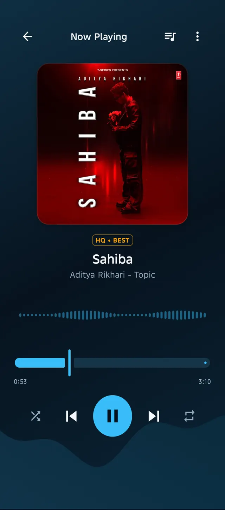

Home · Android music player
A lightweight, minimal Android music player — without ads.
No feeds, no upsells, no “premium offline mode”. Aura plays the music you keep, respects your battery, and gets out of the way.
Why a local player?
Streaming apps rent you access: stop paying and the library stops being yours. Aura works the other way round — files, tags, play history and recommendations sit on your phone, where they keep working with no signal and no sign-in. See how offline playback works.
| What matters | Aura |
|---|---|
| Ads / upsells | None — free forever, MIT open source |
| Accounts / tracking | None |
| Offline playback | Yes — downloads play with no signal |
| Organization | Many-to-many tags + 6 sort orders |
| Playback | Queue, shuffle, repeat, lock-screen controls |
Requirements and permissions
- Android 8 or newer — phone or tablet
- Internet — only for lookups, downloads and artwork
- Foreground media playback — background audio + notification controls
- Notifications (Android 13+) — asked at runtime, for playback controls
No storage permission is needed: audio lives in its own storage space on your phone. No contacts, location, or advertising ID — ever. Details in the privacy notes.
Built for Android, not ported to it
Playback is built the proper Android way: it pauses for calls, shows song info on Bluetooth and headphones, and gives you notification and lock-screen controls. The interface stays smooth and fast, even with thousands of songs.

Free and open source
Aura is MIT-licensed and open source, developed by Ai-Chetan for the open-source community. Read the source, build it yourself, or grab the APK from Download. Contributors are welcome — see how to contribute.
Music rights
Aura doesn't own any songs and claims no rights over them — all music and artwork belong to their respective artists, labels, and rights holders. It's simply your private player for what you choose to keep offline.